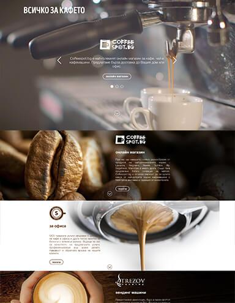
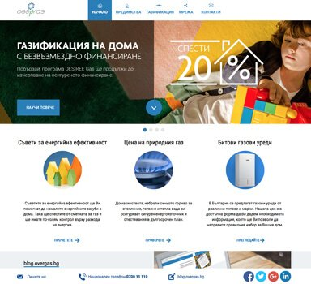
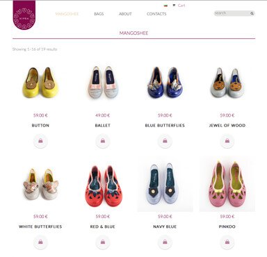
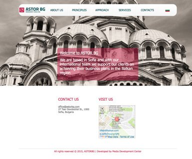
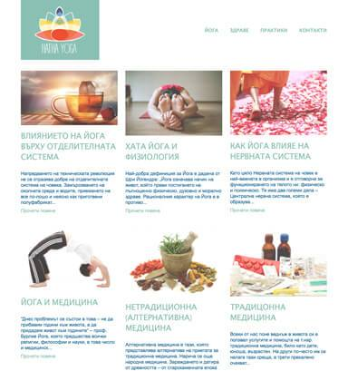
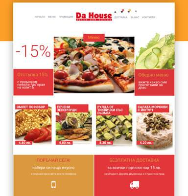
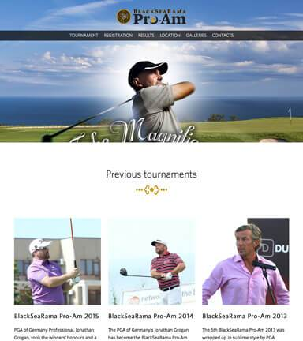

Code
The individual and creative approach to each project is essential to me but there are some basic design concepts I try to always follow in my work:
because less is more
Minimalism
because time is money
Light&Fast
because form follows function
Functionality
because it's a living thing, not a high tech mess of code
Integrity
because in the end it's all about the user
UX first
Works
Click below to check out some of my latest web works
Landing
Landing page
- Development of Coffeespot (online coffee shop) landing page with video background, simple slider and smooth scrolling effect.
- Client: Coffeespot
- Year: 2016
- Technologies: HTML5, CSS3, JavaScript, Responsive design
- 
Promo
Promo website
- Team work on design, development and SEO of a promotional website for the biggest Bulgarian utility company. Built upon custom WordPress template, with responsive design. Includes interactive map and calculator for energy sources price comparison.
- Client: Overgas
- Year: 2016
- Technologies: WordPress, Revolution slider, HTML, CSS, JavaScript, Responsive design
- 
Ecommerce
Ecommerce website
- Design, development and SEO of Kipra e-commerce website for boutique shoes and bags. The site is built upon WordPress template, it is bilingual and integrated with PayPal.
- Client: Kipra atelier
- Year: 2016
- Technologies: WordPress, WooCommerce, HTML, CSS, Responsive design
- 
Corporate
Corporate website
- Design and implementation of a corporate website for a consulting company. The site is built upon a WordPress template.
- Client: Astor Consulting
- Year: 2015
- Technologies: WordPress, HTML, CSS
- 
Blog
Blog
- Design, implementation and SEO of a blog website for a yoga studio. Built upon WordPress template.
- Client: Yoga studio
- Year: 2016
- Technologies: WordPress, HTML, CSS
- 
Food delivery
Food delivery
- Design, development and SEO of a responsive website for Da House restaurant. The site is bilingual and is built upon WordPress template.
- Client: DaHouse restaurant
- Year: 2016
- Technologies: WordPress, WooCommerce, HTML, CSS, Responsive design
- 
Golf tournament
Golf tournament
- Development of the website of ProAm Golf Tournament. Includes info about the rules, registration, live scores, etc. Fully responsive, built upon WordPress template.
- Client: ProAm Golf Tournament
- Year: 2016
- Technologies: WordPress, HTML, CSS, Java Script, Responsive design
- 
Logos
Skills
- WordPress
- HTML5, CSS3
- JavaScript, Jquery
- Photoshop, Illustrator
- Social media marketing
- SEO, SEM
- Copywriting
- Photography
Contacts
Wanna talk about your next project?
To share your project ideas or check my availability, please drop a line at